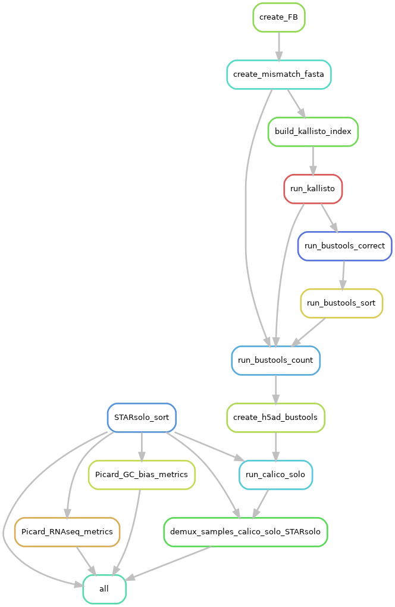

Warning
This documentation is incomplete and is under heavy development!
TODO:
1. More documentation
2. Combine rules split_bams and split_bams_gt
3. Add new Picard metrics
4. Include in new_config.yaml an option to select wasp mode in the rule STARsolo
snRNA_scRNA_Pipeline Introduction
Snakemake Pipeline with “selectable” modules for snRNA seq pre-processing. It also supports various software/pipeline for scRNA seq pre-processing.
The highlights of the pipeline are:
- Streamlined processes to modify parameters for each program through a single yaml file
- Easily modifiable to accomodate more rules
- Can be used for both individual samples as well as multiplexed pools
- Preserve folder structures (mirroring fastqs' folder structures)
- Organize outputs from each module
- Select multiple pre-set modules that simplifies usage across multiple projects
Requirements
This pipeline depends on the following packages/programs:
- Scanpy Manual
- Snakemake Manual
- STARsolo Manual
- GC bias metrics (PICARD)
- RNA seq metrics (PICARD)
- KITE (kallisto indexing and tag extraction)
- cellSNP Manual
- vireoSNP Manual
- hashsolo Info
- QTLtools-mbv
Packages installed through conda
All the packages installed through anaconda3/2018.12 for Python 3.9.5 are described (add_link and file)
Packages installed through pip
All the packages installed for R version 4.1.0 are described (add_link and file)
Overview of the pipeline
Directed Acyclic Graph of the whole pipeline: 
Setting up profiles
The info for setting up profiles for different workload managers is mentioned here
Executing Pipeline
This pipeline can be executed by executing (in case of any workflow manager, submitting) the script called run_snakemake.sh
sh run_snakemake.sh
Configuration for pipeline
This pipeline depends on a yaml config file (new_config.yaml), which has all relevant options for each rule present in this pipeline. This not only streamlines the process of maintaining or modifying program specific parameters but also makes repetitive usage (can be within the project or using it over mutliple projects) of this pipeline over time very efficient.